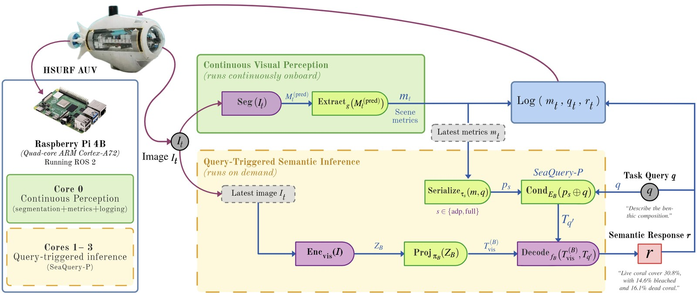

What does it cost to answer a reef survey question onboard a robot? This study measures segmentation and language inference on a workstation and a Raspberry Pi 4, tracing where the time and energy go.
Technical summary
Narrated summary · 5:59. Captions are included in the video.
Running reef assessment on a Raspberry Pi
SeaQuery-P serializes segmentation metrics as a text prefix for a compact vision-language model, SmolVLM-256M. Three segmentors and several VLM precisions are benchmarked on a workstation and on a Raspberry Pi 4.
On the Pi, a lightweight segmentor removes the segmentation bottleneck, and language inference dominates latency and energy. Mixed 4-bit quantization increases generation throughput and reduces storage.

Segmentation latency on a Raspberry Pi 4
Seconds per 1024 × 1024 image. Lower is faster.
Onboard performance
13.6×Faster Pi segmentationPIDNet-S vs SegFormer-B2, 1024²
> 98%Pi pipeline energy in the VLMPIDNet-S, native precision
2.15×Pi generation throughputmixed 4-bit GGUF vs F16
Cite this paper
@inproceedings{11802370,
title = {From Workstation to Edge: Vision-Language Models for Onboard Coral Reef Monitoring},
author = {ElTobgui, Rim and Sudevan, Vidya and Renda, Federico and De Masi, Giulia and Dias, Jorge},
booktitle = {2026 International Workshop on Metrology for the Sea; Learning to Measure Sea Health Parameters (MetroSea)},
year = {2026},
pages = {540--545},
doi = {10.1109/MetroSea71084.2026.11802370}
}